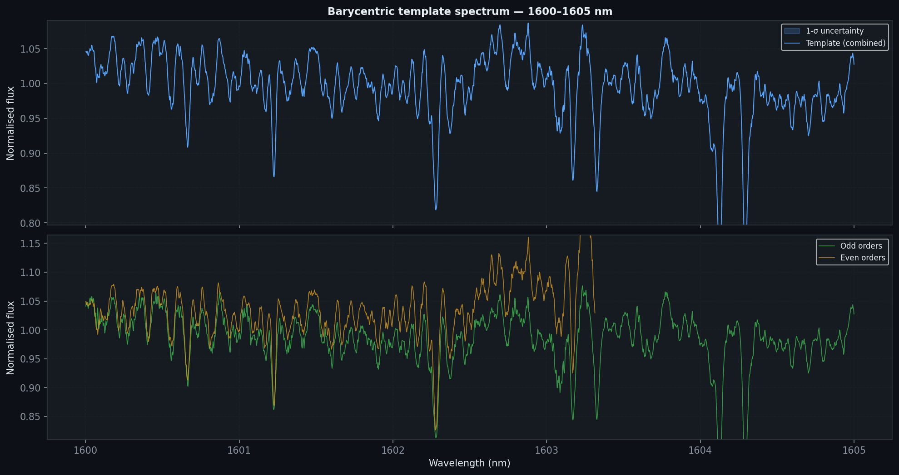
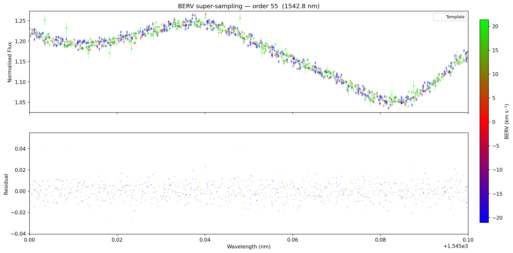

Interpolation-free stellar spectral template construction from multi-epoch échelle spectra — for NIRPS and SPIRou.
Classical template pipelines resample every spectrum onto a common wavelength grid before co-adding. This introduces three well-known problems:
Each spline resampling mixes adjacent pixels, creating wavelength-correlated noise that inflates apparent spectral features and biases line shape measurements.
A non-integer pixel shift smears sharp absorption lines over multiple output pixels, degrading the effective spectral resolution of the co-added template.
Near échelle order boundaries, flux from overlapping orders contaminates the resampled spectrum when a single common grid spans multiple physical orders.
templatepy eliminates all three issues. Pixels are never resampled individually. Instead, the BERV-corrected (\(\lambda_\text{bary}\), flux) pairs from every epoch are fed directly into a Gaussian-weighted Savitzky–Golay regression that maps the irregular cloud onto the output grid in one step.
Key insight: the large range of Barycentric Earth Radial Velocities (BERV) across a typical observing season — up to ±30 km s⁻¹ — means that a stellar absorption line visits many different detector pixel positions across epochs. Combining all epochs without resampling effectively super-samples the spectrum, recovering sub-pixel spectral information.
The output wavelength axis is a logarithmic grid equally spaced in velocity:
$$\lambda_k = \lambda_0 \exp\!\left(\frac{k}{N}\,\ln\frac{\lambda_1}{\lambda_0}\right), \quad k = 0,\dots,N-1$$with $\Delta v = c\,(\lambda_{k+1}/\lambda_k - 1)$ = 0.5 km s⁻¹ for NIRPS and 1.0 km s⁻¹ for SPIRou. Every pixel covers the same fractional bandwidth, so the pixel response function is shift-invariant.
Each observation's wavelength array is shifted to the Solar System barycentre using the full relativistic formula:
$$\lambda_\text{bary} = \lambda_\text{obs} \sqrt{\frac{1 + v_\text{BERV}/c}{1 - v_\text{BERV}/c}}$$This aligns all spectra in a common rest frame before they are co-added.
For each output pixel $\lambda_k$ the filter fits a polynomial of degree $p = 3$ to the surrounding scattered data points, weighted by a Gaussian in log-wavelength:
$$w_i = \exp\!\left(-\frac{(\ln\lambda_i - \ln\lambda_k)^2}{2\sigma^2}\right)$$where $\sigma = \text{FWHM}/(2\sqrt{2\ln 2})$ with FWHM = $3\,\Delta v\,/\,c$. The polynomial coefficients give the template value and its derivatives $\partial f/\partial\ln\lambda$ up to third order at no extra cost.
FITS files are read once; per-order (wave, flux, blaze, BERV) dicts are pickled to <input>_temp/ for fast re-runs.
Pixels where O₂ transmittance < 90 % (TAPAS model, La Silla) are flagged NaN. Optional sky emission masking controlled by --skymask.
Each pixel moves to its barycentric wavelength. No interpolation.
All scattered (log λ, f) pairs fed to the filter. Template and derivatives d0…d3 produced in the final iteration.
Residuals between each observation and current template are computed. Pixels > 2σ are rejected; template is refit.
A low-pass-filtered ratio removes slow continuum mismatches from imperfect blaze division.
Odd and even diffraction orders are built separately and merged with blaze-function weights. Order-edge fall-off handled by Gaussian-eroded weight profiles.
The figures below are generated directly from a NIRPS dataset (TOI-4552 / Proxima Centauri) using the bundled generate_figures.py script and the --quickdoc / --docmode pipeline flags. Re-generate them at any time with:
python generate_figures.py TOI4552.csv --output_dir figures

# 1. Clone the repository
git clone https://github.com/eartigau/templatepy.git
cd templatepy
# 2. Create a dedicated conda environment
conda create -n templatepy python=3.12
conda activate templatepy
# 3. Install all dependencies
pip install -r requirements.txt
# 4. Install etienne_tools (required dependency)
pip install git+https://github.com/eartigau/etienne_tools.git
# 5. Verify
python -c "from template_nointerp import make_template; print('OK')"git clone https://github.com/eartigau/templatepy.git
cd templatepy
python -m venv .venv && source .venv/bin/activate
pip install -r requirements.txt
pip install git+https://github.com/eartigau/etienne_tools.gitgit clone https://github.com/eartigau/templatepy.git
cd templatepy
conda create -n templatepy-dev python=3.12
conda activate templatepy-dev
pip install -e ".[dev]"
pip install git+https://github.com/eartigau/etienne_tools.gitNumba first-run compilation: On the very first run, Numba will JIT-compile the inner loops. This adds ~30–60 s of one-time overhead. Subsequent runs use the cached bytecode and start immediately.
| Package | Min. version | Purpose |
|---|---|---|
numpy | 1.24 | Array operations throughout |
scipy | 1.10 | Splines, constants, signal processing |
astropy | 5.3 | FITS I/O, Table |
matplotlib | 3.7 | Diagnostic plots |
tqdm | 4.65 | Progress bars |
numba | 0.57 | JIT-compiled inner loops |
etienne_tools | latest | lowpassfilter utility |
gaussian_savgol | bundled | Gaussian-weighted SavGol on irregular grid |
import glob
from template_nointerp import make_template
from astropy.table import Table
# Collect all telluric-corrected FITS files
files = sorted(glob.glob("data/*t.fits"))
# Build the template (instrument auto-detected from FITS header)
tbl = make_template(
files,
doplot = True, # show diagnostic plot for a representative order
skymask = 0.3, # mask pixels where sky/flux > 0.3 (-1 = off)
mask_o2 = True, # mask O2 bands using bundled TAPAS model
)
# Save as CSV and FITS
tbl.write("my_template.csv", overwrite=True)
tbl.write("my_template.fits", overwrite=True)python template_nointerp.py <input_folder> <output_file> [options]
# Examples:
# Minimal run (NIRPS, no masking)
python template_nointerp.py data/ TOI4552.csv
# With O2 masking (recommended for NIR)
python template_nointerp.py data/ TOI4552.csv --mask_o2
# Sky masking + O2 masking
python template_nointerp.py data/ TOI4552.csv --mask_o2 --skymask 0.3
# Show diagnostic plots (processes one representative order only)
python template_nointerp.py data/ TOI4552.csv --mask_o2 --doplot| Option | Type | Default | Description |
|---|---|---|---|
input_folder | positional | — | Folder with *t.fits input files |
output_file | positional | — | Output path (.csv or .fits) |
--skymask | float | −1 | sky/continuum ratio threshold; −1 disables |
--mask_o2 | flag | off | Mask O₂ telluric bands with TAPAS model |
--doplot | flag | off | Show intermediate diagnostic plots |
On the first run, per-order data for each FITS file is pickled into <input_folder>_temp/. Subsequent runs with the same input folder skip re-reading the FITS files entirely, reducing run time by 3–5×. Delete the _temp/ folder to force a fresh read.
The output table (CSV or FITS) has one row per wavelength pixel on the barycentric magic grid.
| Column | Units | Description |
|---|---|---|
wavelength | nm | Barycentric log-spaced wavelength grid |
flux | ADU (norm.) | Blaze-weighted co-add of odd + even orders |
eflux | ADU (norm.) | Propagated flux uncertainty |
rms | ADU (norm.) | Per-pixel RMS across epochs |
flux_odd | ADU (norm.) | Flux from odd diffraction orders only |
flux_even | ADU (norm.) | Flux from even diffraction orders only |
blaze_odd | — | Median blaze weight (odd orders) |
blaze_even | — | Median blaze weight (even orders) |
flux_savgol_d0 | ADU (norm.) | Gaussian–SavGol template (= flux) |
flux_savgol_d1 | — | $\partial f / \partial \ln\lambda$ |
flux_savgol_d2 | — | $\partial^2 f / \partial \ln^2\lambda$ |
flux_savgol_d3 | — | $\partial^3 f / \partial \ln^3\lambda$ |
All flux_savgol_d* columns have odd and even variants (e.g., flux_odd_savgol_d1).
from astropy.table import Table
import matplotlib.pyplot as plt
tbl = Table.read("my_template.csv")
fig, axes = plt.subplots(3, 1, figsize=(14, 8), sharex=True)
# Normalised template + uncertainty
axes[0].fill_between(tbl["wavelength"],
tbl["flux"] - tbl["eflux"],
tbl["flux"] + tbl["eflux"],
alpha=0.3, label="1-σ uncertainty")
axes[0].plot(tbl["wavelength"], tbl["flux"], lw=0.8, label="Template")
axes[0].set_ylabel("Flux (norm.)")
# Odd vs even order comparison
axes[1].plot(tbl["wavelength"], tbl["flux_odd"], lw=0.7, label="Odd orders", alpha=0.7)
axes[1].plot(tbl["wavelength"], tbl["flux_even"], lw=0.7, label="Even orders", alpha=0.7)
axes[1].set_ylabel("Flux (norm.)")
# First derivative (proxy for RV sensitivity)
axes[2].plot(tbl["wavelength"], tbl["flux_savgol_d1"], lw=0.8, color="tab:orange")
axes[2].set_ylabel("∂f/∂lnλ")
axes[2].set_xlabel("Wavelength (nm)")
for ax in axes:
ax.legend(fontsize=8)
plt.tight_layout()
plt.show()| Instrument | Observatory | Wavelength range | dv_grid | Fiber |
|---|---|---|---|---|
| NIRPS | La Silla (ESO 3.6 m) | 950 – 2000 nm | 0.5 km s⁻¹ | A |
| SPIRou | CFHT (Mauna Kea) | 965 – 2500 nm | 1.0 km s⁻¹ | AB |
The instrument is detected automatically from the INSTRUME FITS header keyword. The TAPAS O₂ model bundled in LaSilla_NIRPS_tapas.fits is computed for the La Silla site; SPIRou users at Mauna Kea may wish to supply a site-appropriate model.